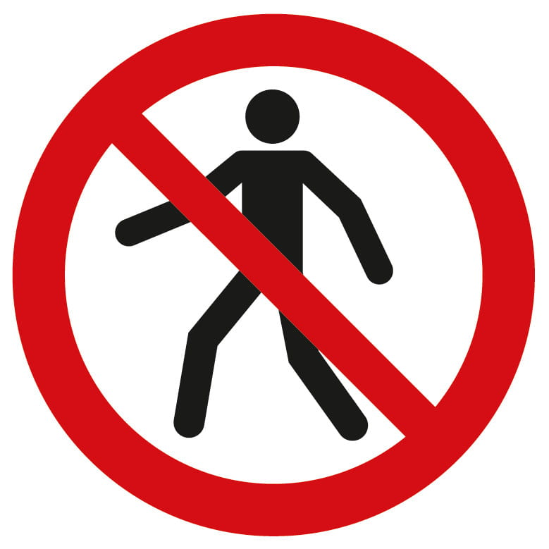
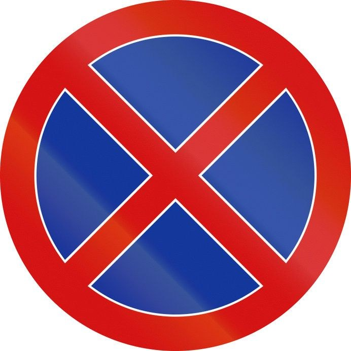
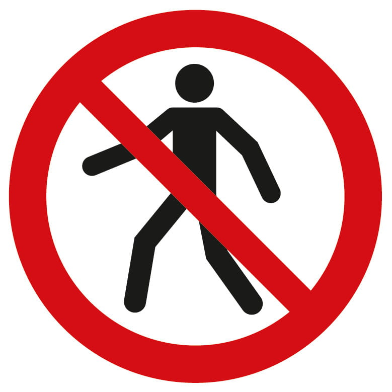
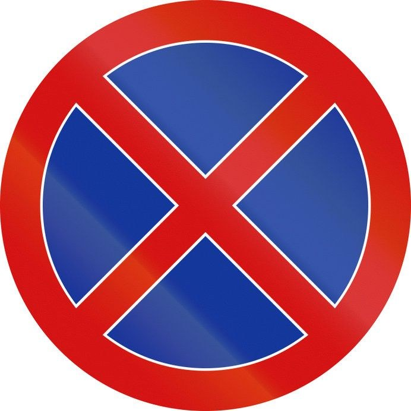
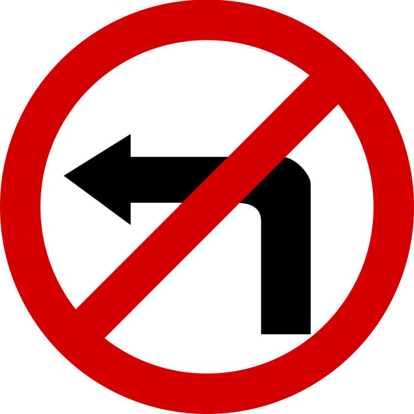
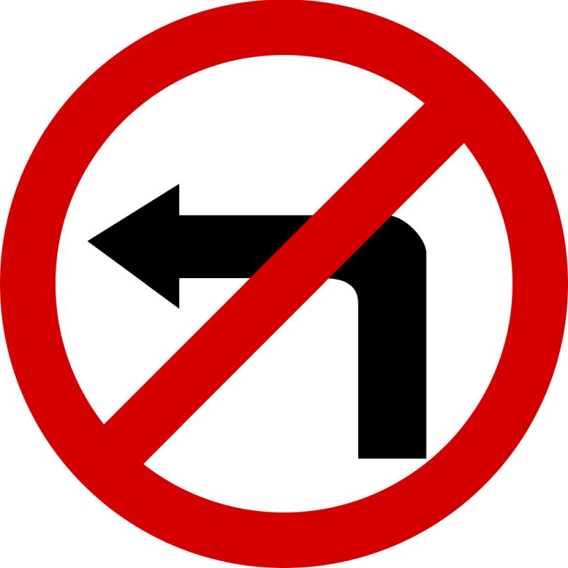
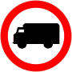
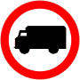
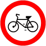
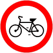

 


 

 

Oznacza zakaz ruchu: 1). samochodów ciężarowych o DMC przekraczającej 3,5 t, 2). ciągników samochodowych, 3). pojazdów specjalnych i używanych do celów specjalnych o DMC przekraczającej 3,5 t, 4). ciągników rolniczych, 5). pojazdów wolnobieżnych. Określona na znaku B-5 albo na tabliczce umieszczonej pod nim masa oznacza, że zakaz dotyczy pojazdu (zespołu pojazdów), którego dopuszczalna masa całkowita przekracza masę podaną na znaku albo na tabliczce.